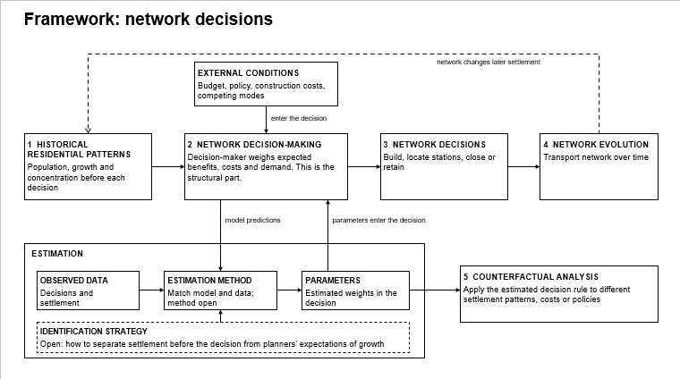

Modelling Network Decisions
Original document dated November 4.
Literature Summary
1. Santamaria (2020)
Reshaping Infrastructure: Evidence from the Division of Germany. CAGE Working Paper 456 (revised April 2021).
Question. Can governments adjust their transport networks to unexpected economic change, and how costly is it when they cannot?
Case. The division of Germany in 1949. Highway construction began in the 1930s. Before the division, construction followed the prewar plan without deviation. After the division, about half of the highways built departed from the plan, shifting westward and along a north–south axis.
Model
A multi-region trade model with many districts, mobile workers and transport costs that depend on road quality.
A benevolent government chooses the quality of infrastructure in each location to maximise total welfare, subject to the spatial equilibrium and a fixed budget.
The model predicts that investment rises in locations that are large (high trade volume) and central (crossed by trade flows).
Data and estimation
Digitised historical maps: the 1930/34 highway plans and the highways built between 1938 and 1989.
Almost everything is calibrated to Germany in 1938. Only one parameter, the returns to infrastructure investment (γ = 0.84), is estimated, using the Simulated Method of Moments to match the concentration of investment in the 1934 plan.
The model is then tested by simulating the division and comparing its predictions with what was actually built.
Results
The predicted network explains about 97% of the variation in post-division transport costs.
Reshaping the network after the division raised welfare by 1.24%, and by up to 2.13% when European integration is taken into account.
Highways built before the division created a path-dependence cost of 1.86% of welfare.
Limitations
The government is assumed to pursue welfare only, so political motives are absent. The solution is a local optimum. The government can only change the quality of existing links, not create new ones, and closures are not considered.
Relevance. The paper shows that network decisions can be treated as endogenous choices and tested against long historical data. However, the decision rule is derived from welfare maximisation rather than estimated from observed decisions, and the model requires a full spatial equilibrium.
2. Jacobs-Crisioni & Koopmans (2016)
Transport Link Scanner: Simulating Geographic Transport Network Expansion Through Individual Investments. Journal of Geographical Systems, 18, 265–301.
Question. Can the expansion of a transport network be simulated from individual investment decisions, and how do economic and institutional conditions shape the outcome?
Model
At each step, the model selects the most attractive investment from a set of candidate links and adds it to the network. The process repeats, so the network grows over time.
Attractiveness is governed by a conditional logit model. It depends mainly on the return on investment (the increase in passenger-kilometres divided by construction cost), together with other link characteristics.
Different investor types (private, state and local) have different weights.
The population of each zone enters through the estimated revenue of a link, so settlement affects the decision.
Candidate links are generated as geographically plausible routes over a fine lattice.
Data and estimation
The Dutch railway network from the first line in 1839 to the early twentieth century, built by more than ten operators.
Municipal population, construction costs and the historical network.
The logit parameters are estimated by comparing the links that were actually built with generated alternatives that were not.
Results
Private investors focused on high returns. State and local investors were less concerned with returns and more with reducing disparities in accessibility.
All investors tended to connect new links to their own networks.
The simulated early network reaches accuracy similar to an earlier approach (Rietveld and Bruinsma, 1998), without selecting the cities to be connected in advance.
Limitations
The model covers expansion only, and only railways. Population is treated as fixed, and accuracy is moderate. The model also adds investments in smaller steps than the historical network did, a bias the authors have not yet investigated. It is not a general equilibrium model.
Relevance. The paper offers a direct example of representing historical network decisions as choices among alternatives and estimating them from history, with population as a driver of demand. Applying it to Japan would require reconstructing the alternatives that decision-makers faced, and separating existing settlement from expectations of future growth.
3. Comparison
The two papers are not direct competitors. They answer different questions, so they are compared here only on the points where they are genuinely parallel.
| Aspect | Santamaria (2020) | Jacobs-Crisioni & Koopmans (2016) |
|---|---|---|
| Setting | Highways in Germany, before and after the 1949 division | Railways in the Netherlands, from 1839 to the early twentieth century |
| Decision-maker | A single benevolent government | Several investors: private, state and local |
| Form of decision | Optimisation: infrastructure quality is chosen in all locations at once to maximise total welfare under a fixed budget | Sequential discrete choice: one link is chosen from a set of candidates at each step |
| Role of settlement | Population enters through the spatial equilibrium and adjusts to the network | Population of each zone drives the expected revenue of a link, but is treated as fixed |
| Use of data | Mostly calibrated; one parameter (γ) is estimated by the Simulated Method of Moments; the model is then tested on an outside event | Preferences are estimated by conditional logit, comparing links that were built with alternatives that were not |
| Main output | Welfare counterfactuals, including the cost of path dependence | Simulated network growth, compared with the historical network |
| Strength | Strong theory and a clear welfare measure | Estimates the decision rule directly from historical choices |
| Limitation | The decision rule is assumed rather than estimated | No general equilibrium, fixed population and moderate accuracy |
| Closures | Not modelled | Not modelled |
What the comparison shows
Santamaria is strong on theory and evaluation. It can say whether welfare rises or falls, but it does not learn the decision rule from data.
Jacobs-Crisioni and Koopmans are strong on estimating the decision rule. They can show what drove the decisions, but they have no welfare measure.
Both leave out closures, and neither lets settlement change in response to the network. This is where the proposed research could contribute.
Implications for the framework
If the decision-making box follows Santamaria, a full spatial equilibrium model is needed inside it, which adds the complexity that sensei warned against. If it follows Jacobs-Crisioni and Koopmans, the model is simpler and fits historical data better, but it must be clearly structural rather than an ordinary regression. One possible middle path is a discrete-choice decision rule estimated from history, followed by a simple welfare counterfactual. This is only an idea; I have not found a paper that does exactly this.
Discussion. Should the decision rule be estimated from observed choices, as in Jacobs-Crisioni and Koopmans, or derived from welfare maximisation, as in Santamaria? The answer also depends on whether the historical data can support the reconstruction of alternative investments.
Framework

Variables
COST AND NETWORK
Construction cost: distance, terrain, river crossings
Distance to the existing network
Connectivity of the network
Car ownership and other competing modes
DECISION-MAKER AND CONTEXT
Type: government, national railway, private operator
Policy period
National budget
Operator finances, mainly for closures
War and crisis periods
NOT OBSERVED
Political influence and local lobbying
Planners' expectations of growth
These may correlate with settlement: the identification problem
OUTCOME: THE DECISION
Build or open a link
Station location
Close a link
Retain a link
Year of opening or closing
SETTLEMENT BEFORE THE DECISION
Population level near the link
Population growth
Density
Concentration in a few centers
Measured before the decision date
DEMAND AND ECONOMY
Expected demand: population in the catchment
Industry, mining, ports
Employment
Income, if available